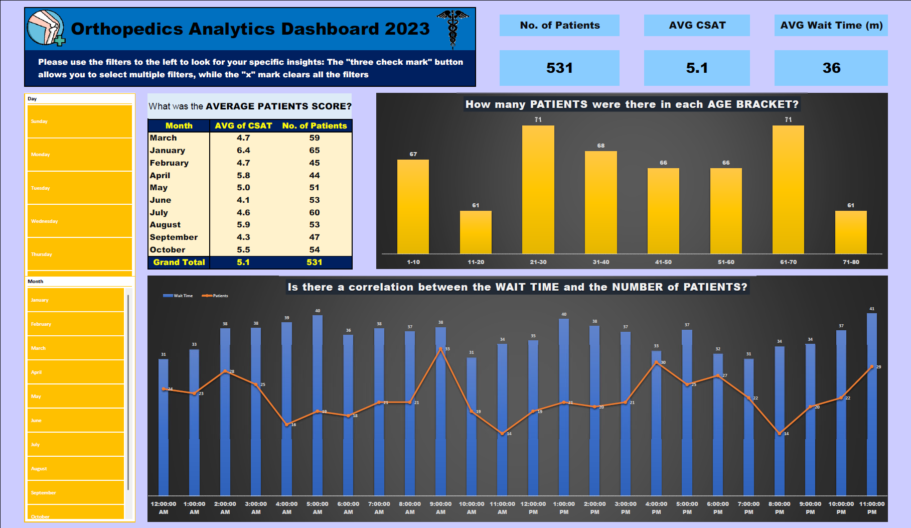
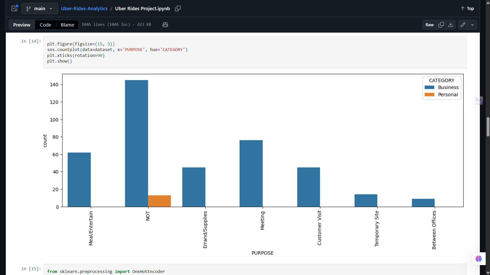
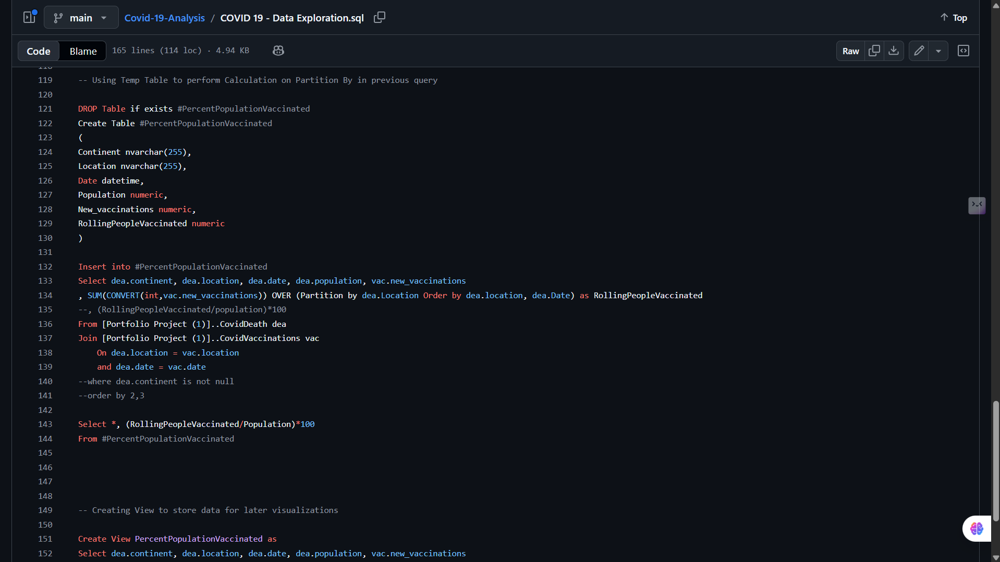
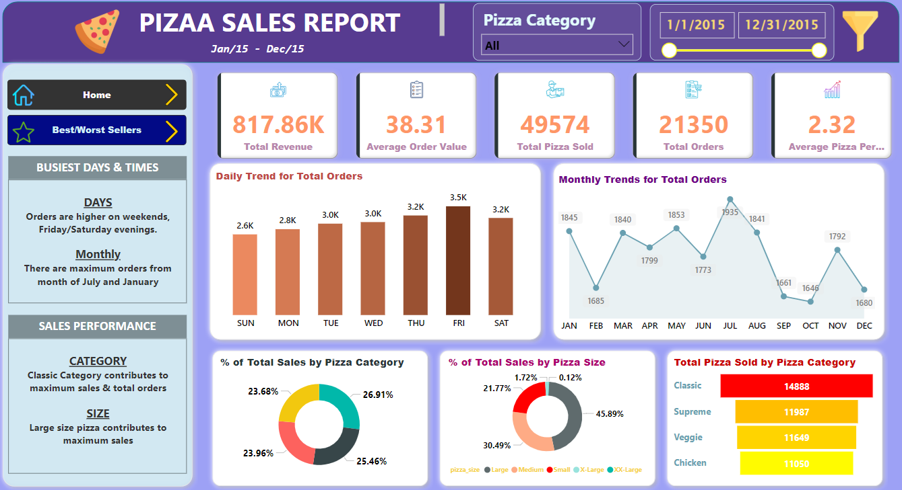
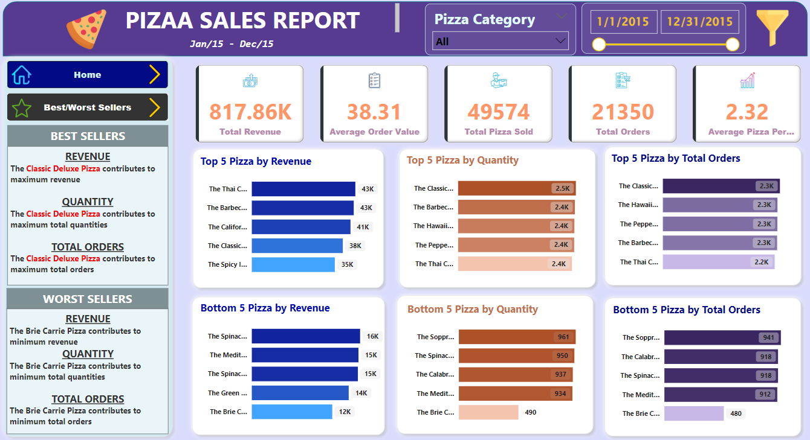
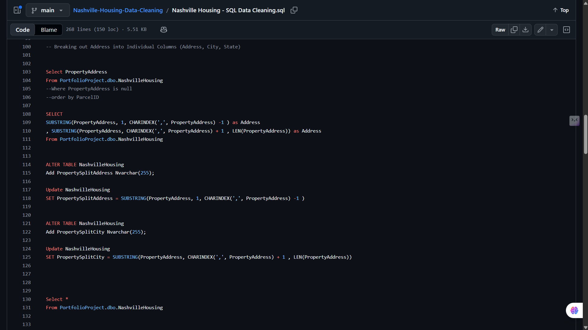

Dashboard Gallery · Power BI · SQL Projects
Selected Analytics Projects
A supporting collection of analytics projects and dashboard samples across sales,
HR, call center, operations, fleet performance, SQL analysis, and data cleaning.
This page is used as a compact gallery to show range without replacing the main case studies.

Project Overview
This gallery brings together smaller analytics and dashboard projects built using Power BI,
SQL, Excel, Python, Power Query, and DAX. The goal is not to present each one as a full business
system, but to show practical dashboard delivery, KPI thinking, SQL analysis, and data cleaning
across different datasets.
Why This Page Exists
The main portfolio focuses on stronger case studies such as BI systems, recruitment analytics,
digital operations, and e-commerce modeling. This page works as a secondary proof section:
it shows additional practice and project range while keeping the main portfolio clean and focused.
Selected Projects
-
Pizza Sales Analysis: SQL and Power BI project focused on orders, revenue,
product categories, sales patterns, and business KPI reporting.
-
COVID-19 SQL Analysis: SQL-based analysis of global COVID data, including
infection trends, country comparisons, and time-based exploration.
-
Nashville Housing Data Cleaning: SQL data cleaning project focused on
standardizing fields, fixing inconsistent records, preparing addresses, and improving dataset usability.
-
Call Center Performance Analysis: Power BI dashboard sample focused on calls,
agents, response activity, resolution indicators, and service performance KPIs.
-
Ambulance Fleet Performance Analysis: operational dashboard sample focused on
response activity, fleet utilization, dispatch patterns, and performance tracking.
-
ATLAS LAB HR Analysis: HR dashboard sample covering workforce metrics,
attrition indicators, department views, and employee-level reporting.
Dashboard Design Focus
- Clear KPI cards for quick business understanding.
- Simple filters and slicers for practical exploration.
- Trend charts, category breakdowns, and comparison visuals.
- Clean layouts that prioritize readability over decoration.
- Business-friendly summaries that support decision-making.
Tools & Technologies
What This Gallery Shows
This page shows my ability to work with different business datasets, build structured KPIs,
clean and prepare data, create understandable dashboards, and communicate insights in a clear
visual format. It is intentionally kept as a supporting gallery rather than a main portfolio case study.
Screenshots





Back to Work